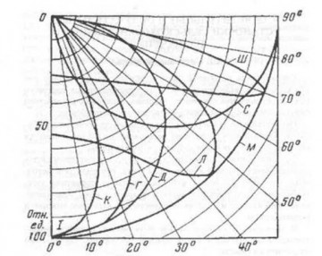

Для размещения светильников должны быть известны следующие размеры:
H - высота помещения, м;
hр - высота расчетной поверхности над полом, м (если неизве
стна, принимается высота условной рабочей поверхности 0.8м);
hc - расстояние от светильника до перекрытия (свес), м
(принимается в диапазоне 0 - 1.5м);
L - расстояние между соседними светильниками в ряду или рядами светильников, м;
Hp - расчетная высота от условной рабочей поверхности до светильника, м;
Распределение освещенности по освещаемой поверхности определяется типом КСС и отношением расстояния между соседними светильниками или рядами светильников к высоте их установки (L/Hp). Для каждой КСС существует наивыгоднейшее значение L/Hp, обеспечивающее наибольшую равномерность распределения освещенности и максимальную энергетическую эффективность.
| L/Hp | Тип КСС | ||||
|---|---|---|---|---|---|
| К | Г | Д | М | Л | |
| 0.4 - 0.7 | 0.8 - 1.1 | 1.4 - 1.6 | 1.8 - 2.6 | 1.6 - 1.8 | |
Одной из важнейших характеристик светильников является кривая силы света и соотношение потоков, излучаемых в нижнюю и верхнюю полусферы. Как правило, светильник разрабатывается не для одного конкретного объекта или светового решения, а для типового и массового использования. Поэтому от того, как распределяется в пространстве световой поток, зависит его назначение в освещении. Существует несколько стандартных типов диаграмм углового распределения силы света, или кривых сил света (КСС), подробное описание которых можно найти, например, в ГОСТ 17677—82.
Для начала разберем, что такое симметричная и ассиметричная кривая силы света:
| Тип кривой силы света | Зона направлений максимальной силы света | |
|---|---|---|
| Обозначение | Наименование | |
| К | Концентрированная | 0 - 15° |
| Г | Глубокая | 0 - 30°, 180-150° |
| Д | Косинусная | 0 - 35°, 180-145° |
| Л | Полуширокая | 35 - 55°, 145-125° |
| Ш | Широкая | 55 - 85°, 125-95° |
| М | Равномерная | 0°, 180° |
| C | Синусная | 70 - 90°, 110-90° |
При этом необходимо пояснить, что кривые светораспределения конкретных светильников могут несколько отличаться от типовых кривых, но характер их должен соответствовать типовым кривым.
Для сопоставимости данных как кривые силы света обычно даются для светильника с условным световым потоком лампы (или суммарным потоком нескольких ламп) 1000 лм.
Типовые кривые силы света:
